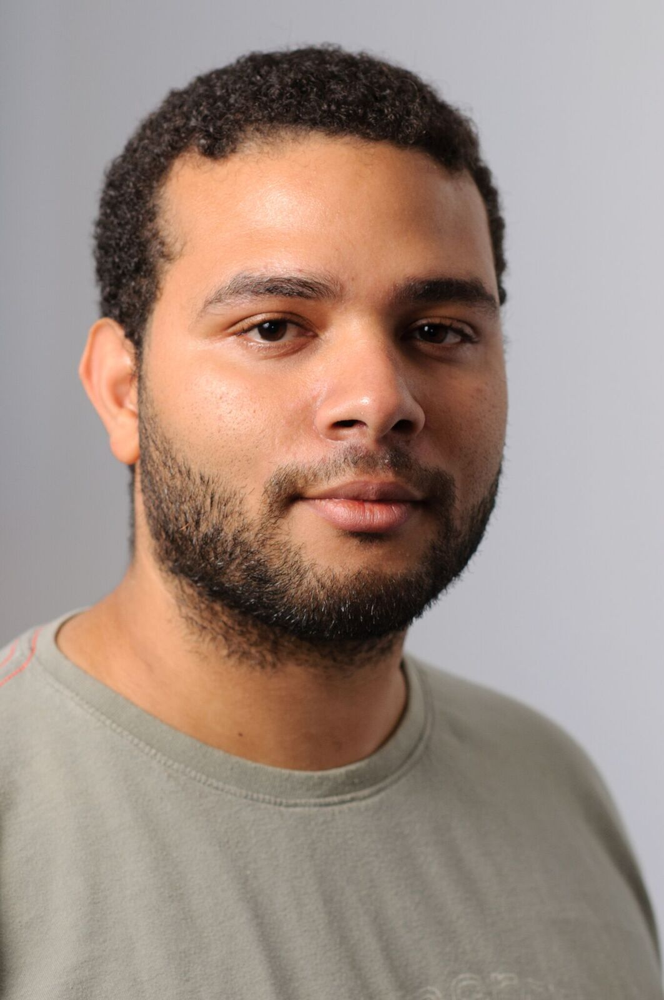

A propos

Je suis curieux, tenace, rigoureux et j'aime le travail d'équipe.
Je suis passer à simplon ce qui m'a permis d'être indépendant et de voir beaucoup de technologies. Ca a été un très gros boost et m'a permis de m'épanouir dans le monde du développement.
Je recherche une expérience qui me permettra de d'approfondir mes compétences dans le backend (avec JAVA, PHP, MYSQL...) ou dans le frontend (HTML, CSS, JavaScript..).
Je souhaite tout aussi bien travailler dans une grande entreprise que dans une start up, ce qui me motive c'est de construire des projets.